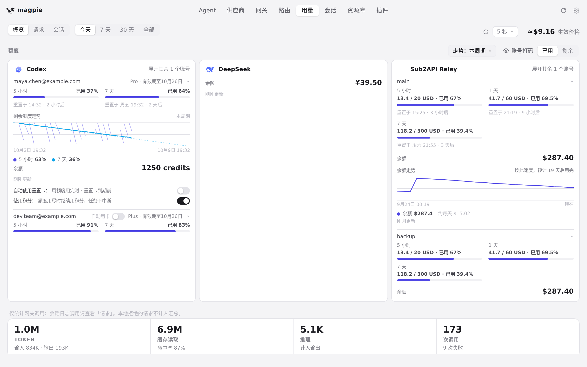
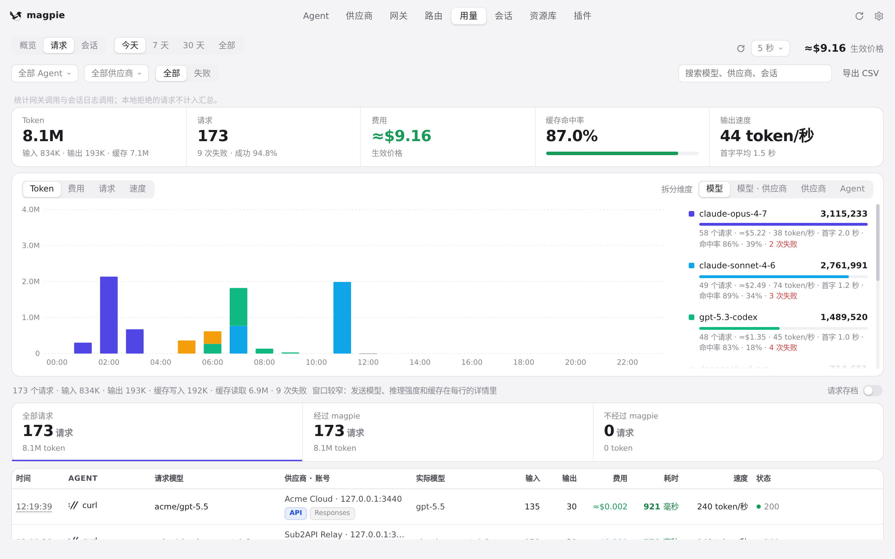
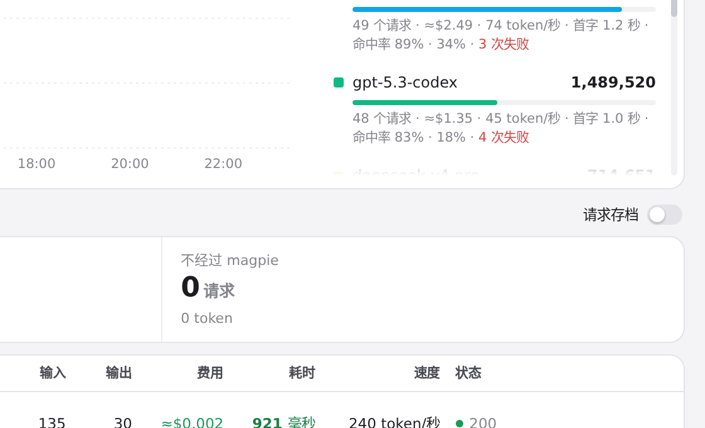
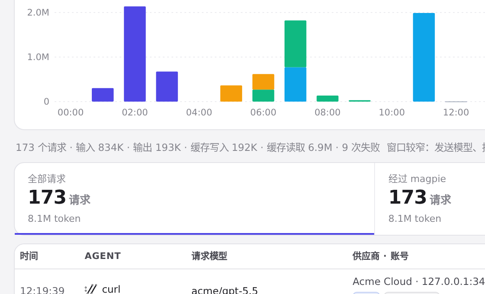

#1017 界面预览
commit 3b1f42d · 回到 PR · 「用量」页的 show() 与 load() 两条路径现在都会一并读取供应商状态（load() 里与用量并发），于是 renderArchive 画的请求存档开关不再因为模块级 providers 未加载而在「请求」栏缺席。
红线是鼠标走过的轨迹，红色圆环是一次点击；底部文字是这一步在做什么。空格暂停，← → 逐段查看。

用量页「请求」栏的请求存档开关 · 「用量」页打开时的「概览」栏

用量页「请求」栏的请求存档开关 · 「请求」栏顶部这一行

用量页「请求」栏的请求存档开关 · 「请求」栏上的请求存档开关及其提示

用量页「请求」栏的请求存档开关 · 同一行左侧的请求合计